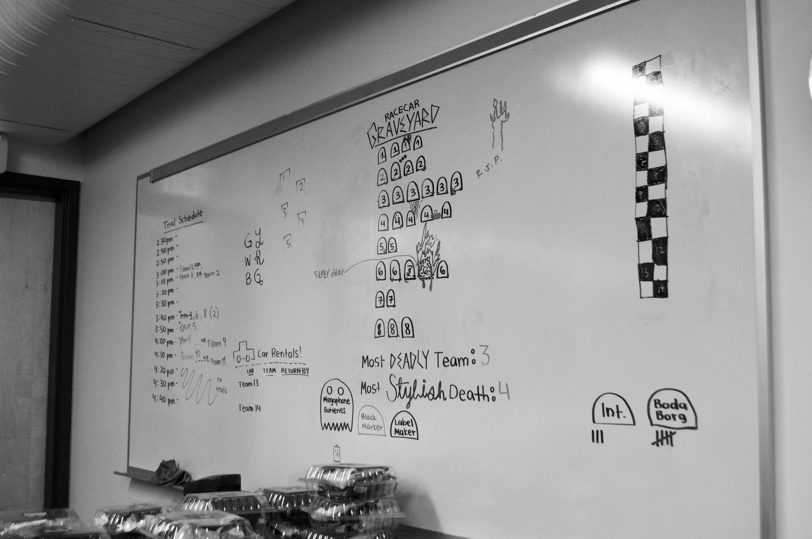
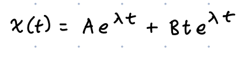
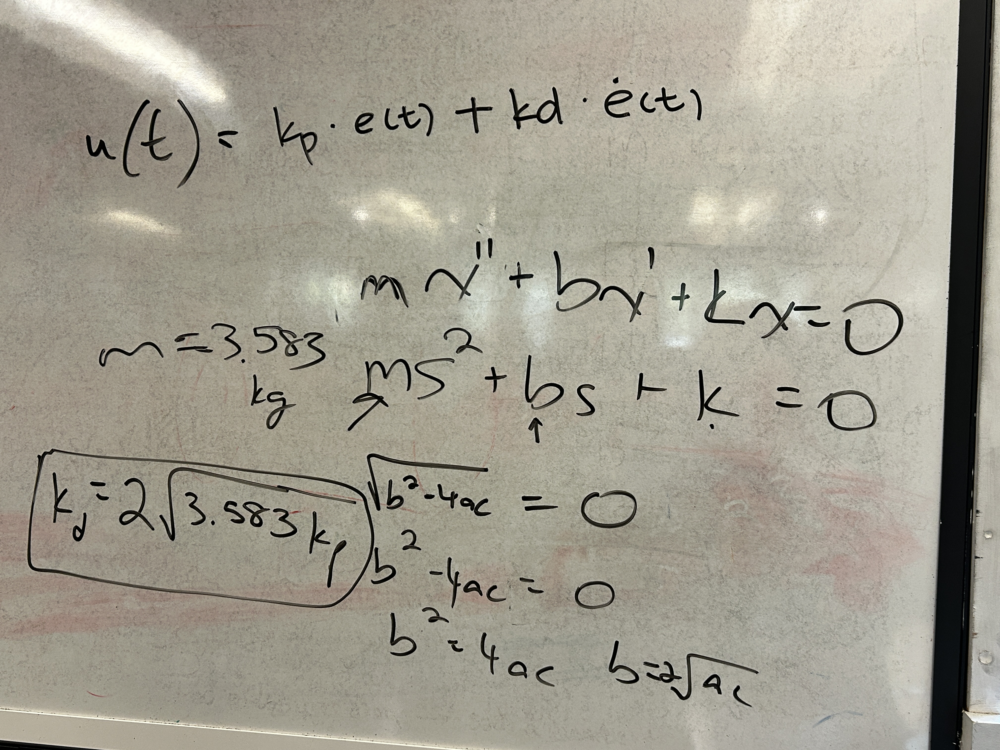
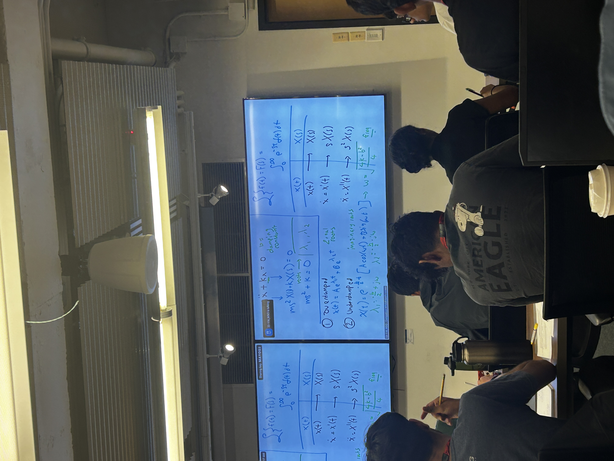
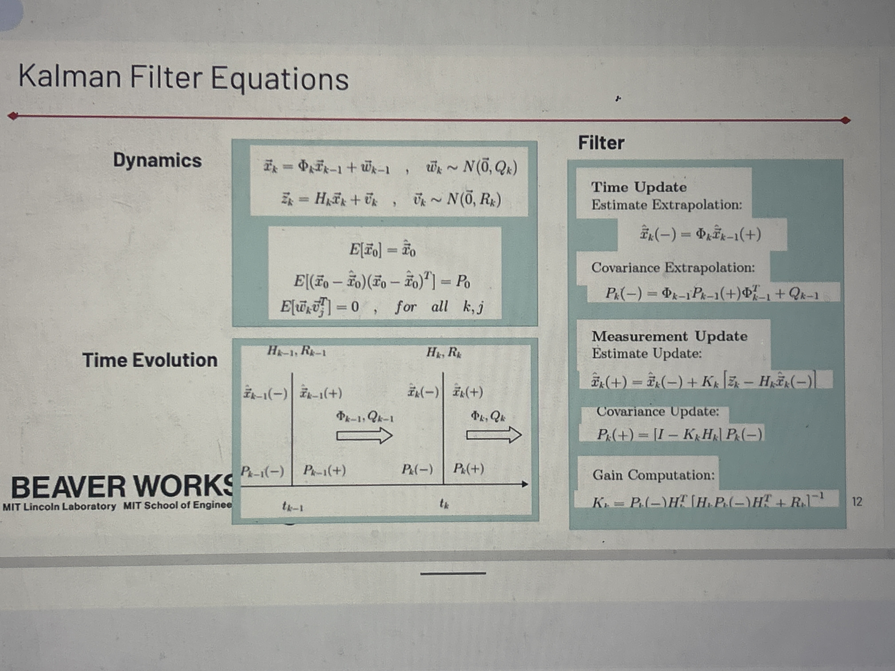
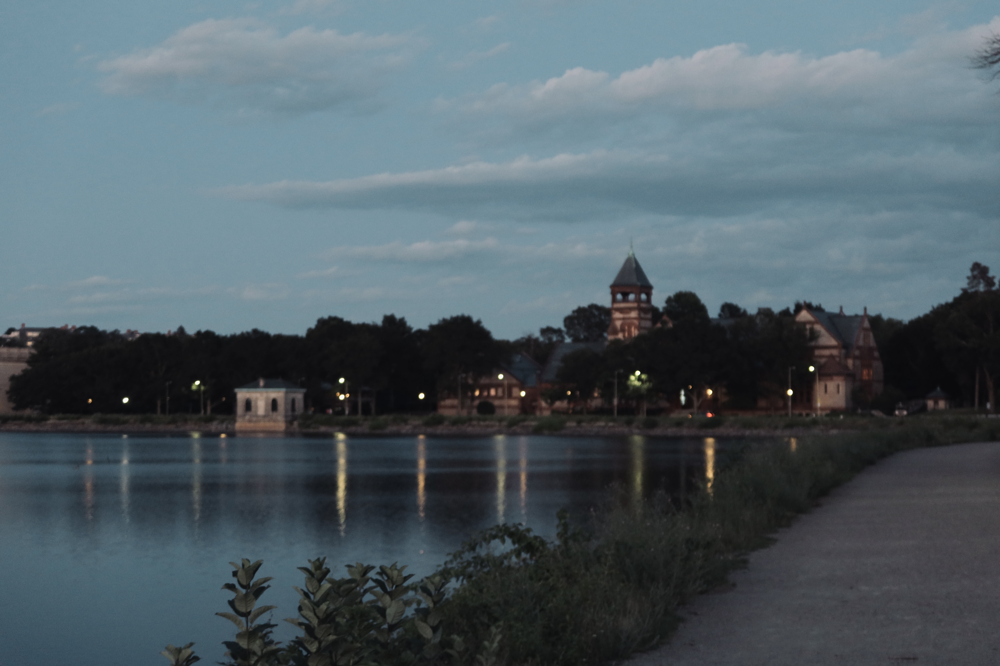

MIT BWSI RACECAR

One cubic meter of space, the mechanical sound of fast spinning motors, wheels scraping the floor at turns, racecar that shot off the track followed by a release of disappointment, stomping feet, groans, frustration. Hugging, screaming, The end of the classroom is cheering.
She closes her eyes, standing among the vibrating air, allowing heartbeat to swallow herself, as if she could disappear immediately.
"Team 1 Kachow, it is your turn!"" The instructor announced.
Eyes opened. ENTER key pressed. All autonomously, the racecar sprang forward like a bow, yet immediately followed by a 180 degree U turn.
I have always disliked competition. Every ranking, race, scoreboard seemed to turn my effort into proof that I was behind.
“Maybe engineering will be different,” I told myself, “it has to be." I came to BWSI to challenge myself once more, to see whether competition in engineering could give me the excitement of adrenaline. But I didn't expect this much of competition. It is an environment where speed is worshiped, the faster the better.
After three quick turns, the racecar began to slow down, drifting left and right along the track.




Laplace transform, PID controllers, differential eq in air lift were far too complicated for a sophomore who has just taken precalculus and self studied ap physics 1 and python. I watched the racecar struggle forward, slow, unsteady. “Go, A little more please!” I muttered. But crooked track walls, shoes moving back and forth, and every signals around is interfering with it simultaneously. It hesitated and slowed even more. And I was doing the same thing.
Finally, it bumped onto a foot, ending the mission.
Was I really not made for competition?
Memories brought me back to that spring, when I had tried to add self-localization to my disaster rescue robot. I wanted it to explore the unknown spaces, understand where it was, and navigate in rescue situations. After learning through nearly every relevant YouTube video I could find, I eventually had to put the project aside (It was too hard, and I needed a foundation). It was BWSI Spring course that brought me the hope,and I came here to learn enough to bring R&D back to the program.
On the first day, the instructor told us one of the hardest unsolved problems in autonomous systems——to locate the perfect position of the system without the satellite's help.
Where am I? I questioned myself.
I realized that winning has many forms, yet the one chasing around speed isn't for me. I like slowing down. When the world slowed down, the racecourse became a laboratory： I made the car drive backward, passing other cars while playing music, and display funny LED slogans about our instructor as blessings. I can spend much more time digging deeper about the principles behind the machine, the physics and mathematics behind motion and control, and the logic behind different algorithms. I also developed an algorithm that integrate multiple sensors to achieve unexpected stability, (that combines IMU, computer vision, LiDAR, odometry). We investigate how different light conditions affect algorithm of signs recognition… etc.
Then came the final U turn.
The algorithm I had built from imperfect signals works perfectly, navigating the turn smoothly. (This algorithm eventually helped us to win the finale grand prix, But by then, winning already changed its meaning, so idk it matter to write it here)
Ahead of it was a straight road to the finish line.
In a program built around speed, I began to find my own rhythm.
